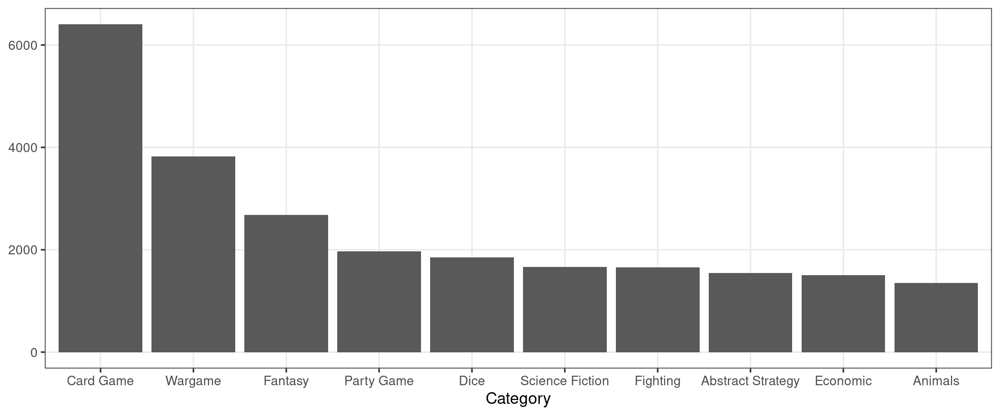
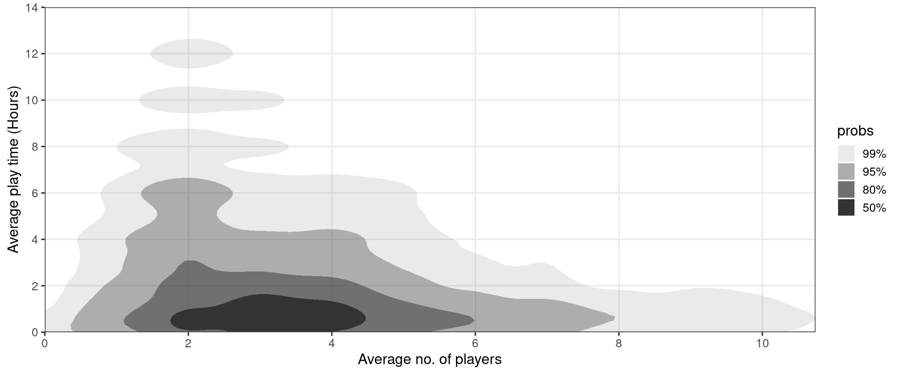
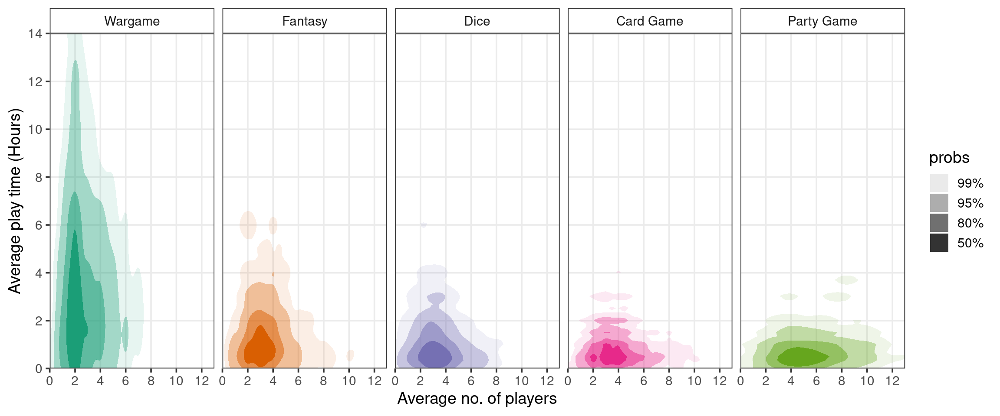

library("tidyverse")
data <- tidytuesdayR::tt_load('2022-01-25')
df <- data$ratings |>
left_join(data$details, by = "id")Visualizing BoardGameGeek data with ggdensity
The Data
In this blog post, we’re going to be looking at the BoardGameGeek data from week 4 of TidyTuesday 2022. This data set consists of community ratings and other stats for just over 20,000 board games. The first thing we need to do is load in the data and perform some basic cleaning, joining the ratings and details data on the id column:
Looking at boardgamecategory
Something that immediately stands out to me is the variable boardgamecategory. Comparing stats across different types of board games could end up being really interesting! But, there is a problem—this column isn’t “tidy”:
select(df, name, boardgamecategory) |>
slice_head(n = 10)| name | boardgamecategory |
|---|---|
| Pandemic | [‘Medical’] |
| Carcassonne | [‘City Building’, ‘Medieval’, ‘Territory Building’] |
| Catan | [‘Economic’, ‘Negotiation’] |
| 7 Wonders | [‘Ancient’, ‘Card Game’, ‘City Building’, ‘Civilization’, ‘Economic’] |
| Dominion | [‘Card Game’, ‘Medieval’] |
| Ticket to Ride | [‘Trains’] |
| Codenames | [‘Card Game’, ‘Deduction’, ‘Party Game’, ‘Spies/Secret Agents’, ‘Word Game’] |
| Terraforming Mars | [‘Economic’, ‘Environmental’, ‘Industry / Manufacturing’, ‘Science Fiction’, ‘Space Exploration’, ‘Territory Building’] |
| 7 Wonders Duel | [‘Ancient’, ‘Card Game’, ‘City Building’, ‘Civilization’, ‘Economic’] |
| Agricola | [‘Animals’, ‘Economic’, ‘Farming’] |
Luckily, this is an easy fix with some string processing. We can use stringr::str_extract_all() to extract the categories from each row into a list, then use tidyr::unnest() to flatten out the resulting list column.
df <- df |>
filter(!is.na(boardgamecategory)) |>
mutate(boardgamecategory = str_extract_all(boardgamecategory, "(?<=')[^,]*(?=')")) |>
unnest(boardgamecategory)
select(df, name, boardgamecategory) |>
slice_head(n = 10)| name | boardgamecategory |
|---|---|
| Pandemic | Medical |
| Carcassonne | City Building |
| Carcassonne | Medieval |
| Carcassonne | Territory Building |
| Catan | Economic |
| Catan | Negotiation |
| 7 Wonders | Ancient |
| 7 Wonders | Card Game |
| 7 Wonders | City Building |
| 7 Wonders | Civilization |
Great! Now, let’s see what the most popular categories are:
top_categories <- df |>
group_by(boardgamecategory) |>
summarize(n = n()) |>
arrange(desc(n)) |>
slice_head(n = 10)
top_categories| boardgamecategory | n |
|---|---|
| Card Game | 6402 |
| Wargame | 3820 |
| Fantasy | 2681 |
| Party Game | 1968 |
| Dice | 1847 |
| Science Fiction | 1666 |
| Fighting | 1658 |
| Abstract Strategy | 1545 |
| Economic | 1503 |
| Animals | 1354 |
Surprisingly, the most popular board game category is “Card Games”! We can create a simple visual showing the prevalence of each of these top 10 categories:
Code
top_categories |>
mutate(boardgamecategory = fct_reorder(boardgamecategory, n, .desc = TRUE)) |>
ggplot(aes(x = boardgamecategory, y = n)) +
geom_col() +
labs(
x = "Category",
y = NULL
)
Looking at playingtime, minplayers, and maxplayers
Let’s put the work that we’ve done on the categories field on hold for a minute and look at how a game’s average number of players relates to its average play time. Before making any plots, I would suspect that as the number of players increases the average play time increases. That is to say, I would expect positive correlation between the two variables.
Code
# First, we need to do a little more cleaning
# Filter out some outliers, compute avg_players
df <- df |>
filter(maxplayers < 20) |>
filter(playingtime < 1000) |>
mutate(playingtime = playingtime / 60) |>
mutate(avg_players = (minplayers + maxplayers)/2)
df |>
distinct(name, .keep_all = TRUE) |> # Don't care about categories right now
ggplot(aes(x = avg_players, y = playingtime)) +
geom_jitter(height = .5, width = .5, size = .1, alpha = .5) +
scale_x_continuous(breaks = seq(0, 12, by = 2)) +
scale_y_continuous(breaks = seq(0, 14, by = 2)) +
coord_cartesian(ylim = c(0, 14), expand = FALSE) +
labs(
x = "Average no. of players",
y = "Average play time (Hours)"
)
Interestingly, this does not seem to be the case! In fact it seems like it may be the opposite—play time appears to be maximized when there are between 2 and 4 players and drops off as the number of players increases.
Unfortunately, the above plot has a few issues that stand in the way of us making useful observations. First, I have had to do some severe jittering to eliminate graphical artifacts resulting from the discrete nature of the data. Notice, several of the points seem to correspond to games with fewer than 0 average players! Second, there is pretty severe overplotting. Although I have attempted to avoid this by setting both the size and alpha arguments, the plot is still very crowded—especially around the horizontal axis between the 2 and 4 player ticks.
Fortunately, I know of a tool that can help with both of these issues—ggdensity!
Code
library("ggdensity")
df |>
distinct(name, .keep_all = TRUE) |> # Don't care about categories right now
ggplot(aes(x = avg_players, y = playingtime)) +
geom_hdr(adjust = c(2, 4)) + # Need to set adjust b/c of discreteness
scale_x_continuous(breaks = seq(0, 12, by = 2)) +
scale_y_continuous(breaks = seq(0, 14, by = 2)) +
coord_cartesian(ylim = c(0, 14), expand = FALSE) +
labs(
x = "Average no. of players",
y = "Average play time (Hours)"
)Warning: `data_frame()` was deprecated in tibble 1.1.0.
ℹ Please use `tibble()` instead.
ℹ The deprecated feature was likely used in the ggdensity package.
Please report the issue at
<]8;;https://github.com/jamesotto852/ggdensity/issues/https://github.com/jamesotto852/ggdensity/issues/]8;;>.
Above, we are plotting estimated “Highest Density Regions” (HDRs)— these are the smallest regions containing 50%, 80%, 95%, and 99% of the data (essentially). For more information, check out the ggdensity repo. See that the issues of overplotting and jittering are eliminated as we have abandoned the strategy of plotting individual points. Now that we’ve taken care of these problems, we can see that there is a negative association between the average number of players and average play time. This is unexpected! Let’s look a little deeper, leveraging our previous work on boardgamecategory.
Putting it all together
Does this negative association hold true across the most popular categories? Or is this yet another example of Simpson’s paradox? There’s only one way to find out—faceting!
Code
df |>
filter(boardgamecategory %in% top_categories$boardgamecategory[1:5]) |>
mutate(boardgamecategory = fct_reorder(boardgamecategory, playingtime, mean, .desc = TRUE)) |>
ggplot(aes(x = avg_players, y = playingtime, fill = boardgamecategory)) +
geom_hdr(adjust = 2) + # Need to set adjust b/c of discreteness
facet_wrap(vars(boardgamecategory), ncol = 5) +
scale_x_continuous(breaks = seq(0, 12, by = 2)) +
scale_y_continuous(breaks = seq(0, 14, by = 2)) +
scale_fill_brewer(type = "qual", palette = 2, guide = NULL) +
coord_cartesian(ylim = c(0, 14), expand = FALSE) +
labs(
x = "Average no. of players",
y = "Average play time (Hours)"
)
This plot offers a new perspective. In each category, it appears to be the case that average play time and number of players are independent. Also, it looks like “Wargame” board games tend to involve fewer players and last signficantly longer than other categories. Combining board games across categories creates the illusion that play time and number of players is negatively correlated—another point for Simpson!